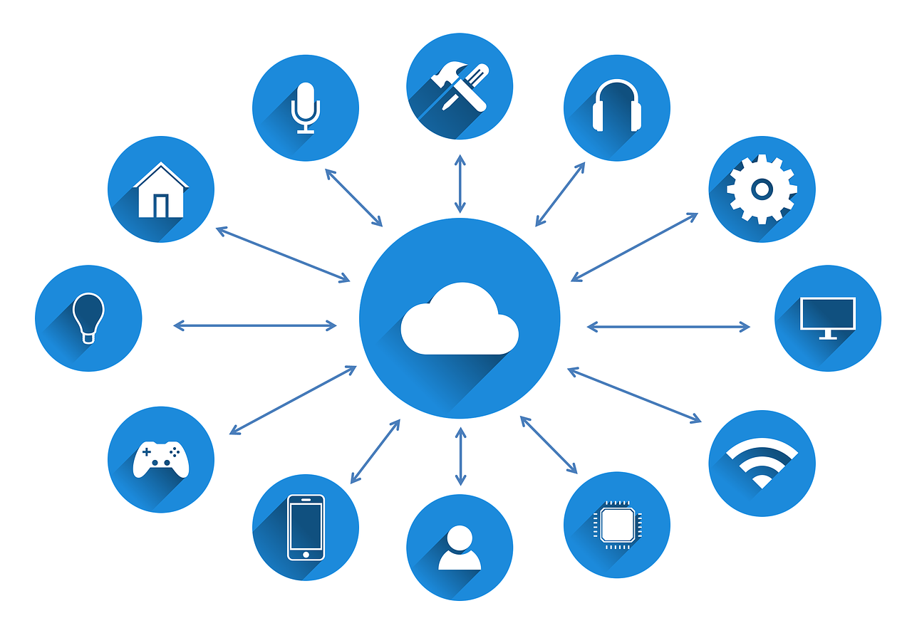

Architecte IoT
Description : L'Architecte IoT conçoit des systèmes interconnectés pour collecter et analyser des données en temps réel.
Missions :
- Conception d'architectures IoT
- Intégration de capteurs et dispositifs connectés
- Analyse des données collectées
- Collaboration avec les équipes de développement et d'exploitation
Salaires :
Après un BTS SIO : Environ 45 000 à 50 000 € brut/an
Après une école d'ingénieur : Environ 55 000 à 60 000 € brut/an
Image :

Vidéo :